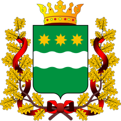
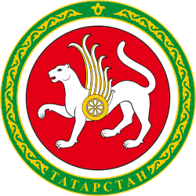

Водосборный бассейн, высота над руслом, состав почвы и история паводков — за 30 секунд. Показываем природный риск который не виден в ЕГРН и на кадастровой карте.
⚠ Продавец участка не обязан сообщать о риске затопления
Ни продавец, ни риелтор не обязаны предупреждать о рисках затопления. Узнать правду можно только после покупки.
Затопленный участок теряет 30–70% стоимости. Продать его по нормальной цене практически невозможно.
Пучинистые и переувлажнённые грунты разрушают фундамент за 3–5 лет. Ремонт дороже нового строительства.
Страховые компании отказывают в выплатах если участок в зоне риска затопления — и не предупреждают об этом заранее.
Откройте карту нужного региона из 8 доступных. Масштабируйте до нужного участка.
Поставьте метку в любой точке карты — алгоритм мгновенно начинает анализ.
Анализируем рельеф, водосборный бассейн, расстояние до реки и состав почвы.
Уровень риска, рекомендации по фундаменту и ответы на ваши вопросы от ИИ-консультанта.
Определяем положение участка в рельефе — пойма, склон или возвышенность, и уклон площадки. Рассчитываем площадь водосборного бассейна: чем он больше, тем быстрее вода прибывает при паводке. Высота над руслом реки определяет реальный риск затопления.
Кадастровый номер, площадь, категория земель и вид разрешённого использования — по клику на карте или по номеру, бесплатно и без регистрации. Плюс проверка охранных зон энергетики, связи и транспорта — таких ограничений на капитальное строительство не видно на обычной кадастровой карте.
База реальных затоплений по регионам с 2010 года. Показываем только если участок в зоне риска — не пугаем зря тех кто на возвышенности.
Данные HWSD2 — мировая база состава почв. Определяем тип грунта, пучинистость и даём конкретную рекомендацию по типу фундамента.
Задайте вопрос об участке в чате. Консультант знает все данные анализа и отвечает конкретно — без общих фраз.
Карта участка, оценка риска, состав почвы, история паводков и заключение ИИ-консультанта — три страницы, готовые для риелтора, банка или личного архива.
Настоящий отчёт, сформированный сервисом по реальным координатам — не иллюстрация.
Наибольший риск затоплений — там где мы уже работаем. Новые регионы добавляются по запросу.

Зона регулярных паводков Амура. Катастрофические затопления 2013 и 2019 гг.
Сезонные паводки предгорных рек. Крымск 2012.

Волга и Кама в черте региона. Весенние паводки, подтопление пойменных участков.
Разовые пакеты без подписки — идеально для проверки одного или нескольких участков.
ЕГРН и кадастровая карта показывают зоны где уже топило официально. ГидроРиск рассчитывает природный риск по рельефу — находит опасные участки до того как случится первый паводок.
Не нужно знать номер участка. Просто кликните на карте в любой точке — даже на поле где участок ещё не оформлен. Анализ за 30 секунд.
Состав почвы и рекомендация по фундаменту, история паводков с 2010 года, ИИ-консультант — в одном анализе.
Серверы в Москве. Платежи через Т-Банк. Координаты передаются только анонимно для расчёта рельефа — личные данные не продаются и не передаются третьим лицам.
Средняя стоимость затопленного участка падает на 30–70%. Данные об участке — бесплатно, оценка риска и разбор от ИИ — от 99 ₽.
Без кредитной карты · данные ЕГРН бесплатно · результат за 30 секунд
Перед покупкой земельного участка важно проверить его на риск затопления и подтопления. Участки в поймах рек, низинах и вблизи водоёмов регулярно затапливаются при паводках и наводнениях. ГидроРиск анализирует рельеф местности, водосборный бассейн и историю затоплений чтобы выявить потенциально опасные участки до совершения сделки.
Наибольшему риску затопления подвержены участки в Амурской области, Краснодарском крае, Иркутской области, Пермском крае и Подмосковье. Весенние паводки, ливневые наводнения и нагонные явления ежегодно затапливают тысячи участков. Проверка участка на затопление онлайн позволяет оценить риск за 30 секунд, не выезжая на место.